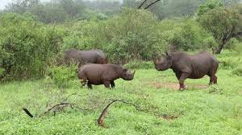

Rhino Safari

>>Rhinos are large, powerful herbivores known for their thick skin and distinctive horns. There are five species of rhinos: the white rhino, black rhino, Indian rhino, Javan rhino, and Sumatran rhino. Rhinos have poor eyesight but a keen sense of smell and hearing, which help them detect predators in the wild.
>>One of the most striking features of rhinos is their horns, which are made of keratin, the same material as human hair and nails. Unfortunately, rhinos are heavily targeted by poachers for their horns, which are falsely believed to have medicinal properties in some cultures. This illegal poaching has led to a drastic decline in rhino populations worldwide.
>>Conservation efforts, such as anti-poaching measures, habitat protection, and community involvement, are crucial to save these magnificent animals from extinction. Organizations and governments work tirelessly to protect rhinos and raise awareness about the importance of preserving these iconic creatures for future generations.
>>Rhinos are large herbivorous mammals characterized by their thick skin and horned snouts. They are known for their strength and resilience and are a critical part of their ecosystems. Rhinos are unfortunately endangered due to poaching and habitat loss.
>>Rhinos are large, powerful herbivores known for their thick skin and distinctive horns. There are five species of rhinos: the white rhino, black rhino, Indian rhino, Javan rhino, and Sumatran rhino. Rhinos have poor eyesight but a keen sense of smell and hearing, which help them detect predators in the wild.
>>One of the most striking features of rhinos is their horns, which are made of keratin, the same material as human hair and nails. Unfortunately, rhinos are heavily targeted by poachers for their horns, which are falsely believed to have medicinal properties in some cultures. This illegal poaching has led to a drastic decline in rhino populations worldwide.
>>Conservation efforts, such as anti-poaching measures, habitat protection, and community involvement, are crucial to save these magnificent animals from extinction. Organizations and governments work tirelessly to protect rhinos and raise awareness about the importance of preserving these iconic creatures for future generations.
| Package | Price |
|---|---|
| Basic | $600 |
| Premium | $1200 |
| Deluxe | $1800 |